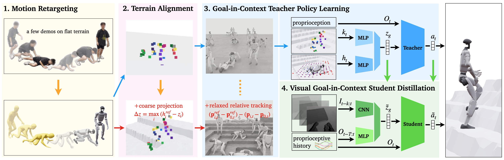

Diagonal stairs fall
Terrain-aware mitigation
TL;DR: A teacher-student framework that distills terrain-aware recovery goals into a deployable egocentric-depth policy.
Unified recovery demands perception, control, and robust contact strategy.
Reliable fall recovery is critical for humanoids operating in cluttered environments. Unlike quadrupeds or wheeled robots, humanoids experience high-energy impacts, complex whole-body contact, and large viewpoint changes during a fall, where the robot must rapidly interpret the surrounding scene to recover safely. Existing methods fragment fall safety into separate problems such as fall avoidance, impact mitigation, and stand-up recovery, or rely on end-to-end policies trained without visual perception through reinforcement learning or imitation learning, often on flat terrain, limiting scalability and generalization. We present a unified fall safety approach for all phases of fall recovery. It builds on two insights: 1) natural human fall and recovery poses are highly constrained and transferable from flat to complex terrain through alignment, and 2) fast whole-body reactions require integrated perceptual-motor representations. We train a privileged teacher using sparse human demonstrations on flat and simulated complex terrains, and distill it into a deployable student that relies only on egocentric depth and proprioception. The student reacts by matching the teacher’s goal-in-context latent representation, combining the next target pose with the locally perceived terrain. Experiments in simulation and on a real Unitree G1 humanoid demonstrate robust zero-shot fall safety across diverse non-flat environments without real-world fine-tuning.
Visual context reduces hazardous contacts and stabilizes recovery behavior.
We investigate the impact of vision on fall recovery by comparing our visual policy to a blind proprioceptive-only policy. The controller is activated only after the robot tilts 20 degrees, to test genuine fall recovery from a true fall state. The blind policy exhibits more unsafe behaviors, including increased head and neck contacts and erratic motions.
Unsafe Blind policy
Safe Visual policy (ours)
Compare privileged teacher, depth student, and blind student rollouts side by side.
Teacher-student distillation with terrain-aware goal inference.
Our visual fall-recovery policy training pipeline has four key components:

Decouple motion priors and terrain geometry for scalable coverage.
By factorizing motion priors and terrain variation, we enable scalable recovery learning without exhaustive pose–terrain coverage.
Impact mitigation under forward, backward, lateral, and uneven-terrain falls.
We evaluate our policy on fall mitigation tasks across diverse terrains. We start the robot in a default pose, and engage the policy only after the robot tilts 20 degrees to test genuine fall recovery.
Robust stand-up from diverse poses and terrain constraints.
We also evaluate our policy on standing up tasks across many different terrains with diverse initial configurations.
@article{anonymous2026vigor,
title = {VIGOR: Visual Goal-In-Context Inference for Unified Humanoid Fall Safety},
author = {anonymous},
journal = {},
year = {2026}
}